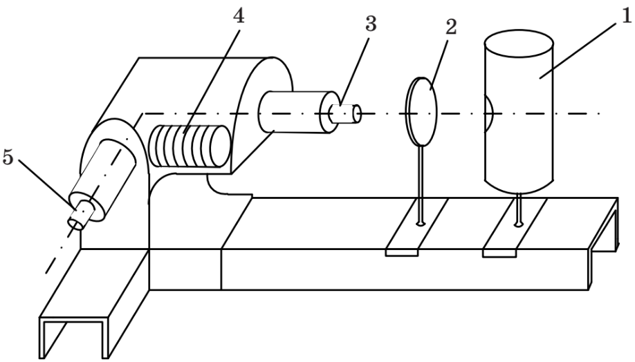
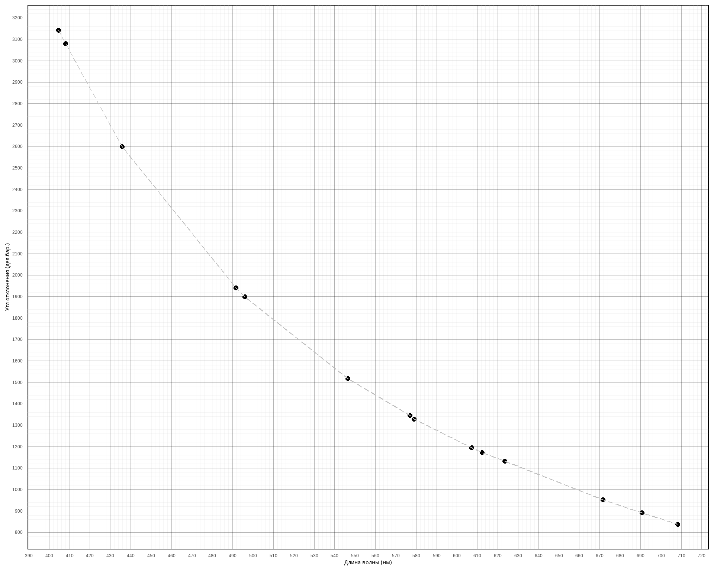
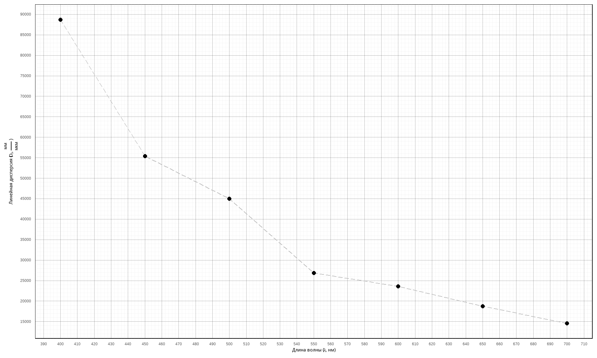

| Пробор | Тип | Предел измерений | Цена деления | Класс точности | Систематическая погрешность |
|---|---|---|---|---|---|
| Монохроматор | УМ-2 | 3600 | 2 | - | 1 |
Лабораторная работа №9: Определение длин волн спектральных линий с помощью спектрометра. Вар. 2
Параметры приборов
| Цвет линий | Интенсивность | \(\lambda\), нм | в прямом направлении \(\varphi_1\) | в обратном направлении \(\varphi_2\) | Среднее значение отсчета по барабану \((\varphi_1 + \varphi_2) / 2\) |
|---|---|---|---|---|---|
| Фиолетовые | сильная | 404.6 | 3144 | 3142 | 3143.0 |
| Фиолетовые | средняя | 408.0 | 3080 | 3081 | 3080.5 |
| Синяя | сильная | 435.8 | 2600 | 2598 | 2599.0 |
| Голубая | средняя | 491.6 | 1944 | 1936 | 1940.0 |
| Зелено-голубая | средняя | 496.0 | 1902 | 1896 | 1899.0 |
| Зеленая | сильная | 546.4 | 1516 | 1520 | 1518.0 |
| Желтый дублет | сильная | 576.9 | 1342 | 1348 | 1345.0 |
| Желтый дублет | средняя | 578.9 | 1324 | 1332 | 1328.0 |
| Оранжевые | слабая | 607.3 | 1196 | 1194 | 1195.0 |
| Оранжевые | слабая | 612.3 | 1171 | 1174 | 1172.5 |
| Красные | средняя | 623.4 | 1144 | 1122 | 1133.0 |
| Красные | слабая | 671.6 | 952 | 952 | 952.0 |
| Красные | средняя | 690.7 | 892 | 890 | 891.0 |
| Красные | слабая | 708.2 | 838 | 836 | 837.0 |
| Цвет линий | в прямом направлении \(\varphi_1\) | в обратном направлении \(\varphi_2\) | Среднее значение отсчета по барабану \((\varphi_1 + \varphi_2) / 2\) |
|---|---|---|---|
| Красная 1 | 333 | 332 | 332.5 |
| Красная 2 | 432 | 436 | 434.0 |
| Оранжевая | 526 | 522 | 524.0 |
| Желтая | 568 | 572 | 570.0 |
| Зелено-голубая | 826 | 832 | 829.0 |
Цель работы
Ознакомление с принципом работы спектрального прибора и определение длин волн спектральных линий.
Описание лабораторной установки

Общий вид экспериментальной установки приведен на Рис. 1
Монохроматор УМ-2 укреплен на рельсе, где также размещены источник света 1 и конденсор 2. Входная щель 3 регулируется по ширине микрометрическим винтом, оптимальная ширина щели 0,02 мм.
В фокальной плоскости объектива 5 зрительной трубы имеется индекс в виде треугольника. Индекс наблюдается через окуляр и служит меткой, на которую наводится спектральная линия.
В верхней части тубуса окуляра имеется лампочка для освещения индекса. Непосредственно под лампочкой расположен диск с набором светофильтра (рекомендуется освещать индекс красным светом). Отсчетным устройством прибора является барабан 4, который соединен с системой диспергирующих призм. При повороте барабана поворачивается вся система призм и происходит перемещение спектра. Барабан имеет спиральную шкалу с делениями от 0° до 3500°. При повороте барабана на 3500° призмы поворачиваются на 9°43′20″, что составляет 35000″. Следовательно, при повороте барабана на одно малое деление призмы поворачиваются на 20″.
Рабочие формулы
Cреднее значение отчета по барабану
\[\begin{align} \label{eq:n1:1} \varphi= \frac{\varphi_1 + \varphi_2}{2}, \end{align}\]
Угловая дисперсия
\[\begin{align} \label{eq:n1:2} D_\varphi = \frac{d_\varphi}{d_\lambda}, \end{align}\]
Линейная дисперсия \[\begin{align} \label{eq:n1:3} D_l = D_\varphi \cdot F, \end{align}\]
Результаты измерений и вычислений
- Градуировка шкалы барабана УМ-2.
По данным таблицы 2 построен градуировочный график (зависимости угла отклонения от длины волны). График представлен на рисунке 2.
- Определение длин волн спектральных линий.
После градуировки ртутная лампа заменяется неоновой. С помощью градуировочного графика определяются длины волн ряда линий в спектре излучения. Результаты подсчетов представлены в таблице 4
| Цвет линий | в прямом направлении \(\varphi_1\) | в обратном направлении \(\varphi_2\) | Среднее значение отсчета по барабану \((\varphi_1 + \varphi_2) / 2\) | Длина волны (нм) |
|---|---|---|---|---|
| Красная 1 | 333 | 332 | 332.5 | 823 |
| Красная 2 | 432 | 436 | 434.0 | 814 |
| Оранжевая | 526 | 522 | 524.0 | 798 |
| Желтая | 568 | 572 | 570.0 | 787 |
| Зелено-голубая | 826 | 832 | 829.0 | 711 |
- Определение дисперсии монохроматора УМ-2.
Для вычисления линейной дисперсии монохроматора необходимо знать фокусное расстояние зрительной трубы \(F = 270\) мм. Расчеты дисперсии представлены в таблице 5. По данным таблицы построен график зависимости линейной дисперсии монохроматора от длины волны. График представлен на рисунке 3
| Область спектра, мкм | \(D_\varphi\) дел.бар/мкм | \(D_\varphi\) рад/мкм | \(D_l\) мм/мкм |
|---|---|---|---|
| 0.40 | 18824 | 329 | 88704 |
| 0.45 | 11757 | 206 | 55401 |
| 0.50 | 9546 | 167 | 44982 |
| 0.55 | 5705 | 100 | 26884 |
| 0.60 | 5000 | 88 | 23562 |
| 0.65 | 3984 | 70 | 18772 |
| 0.70 | 3086 | 54 | 14542 |
Графики


Вывод
В ходе работы был изучен принцип работы спектрального прибора. При помощи градуировочного графика, были определены длины волн спектральных линий неоновой лампы. Также был построен график зависимости линейной дисперсии монохроматора от длины волны